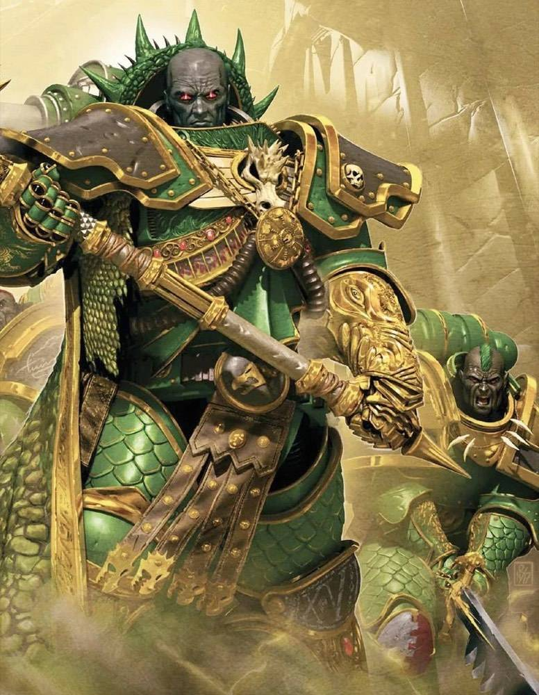
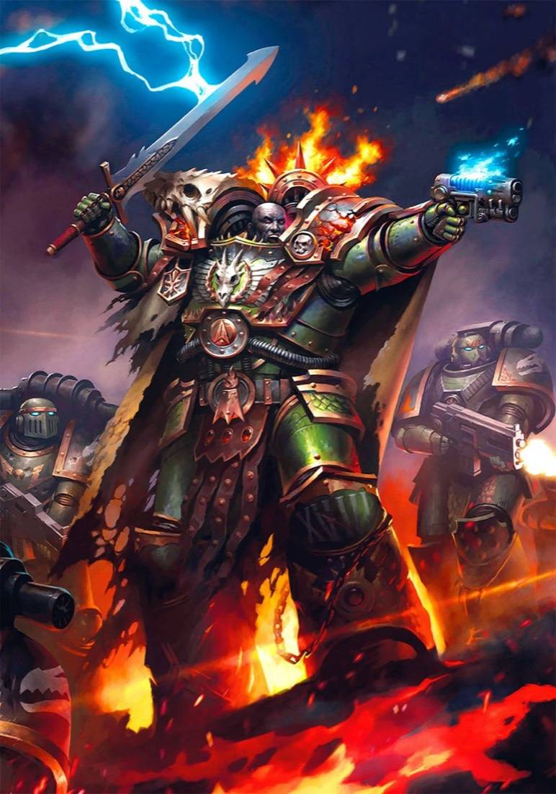

Vulkan
| Vulkan | |
|---|---|
| Primarch of the XVIII Legion | |
 Votive image of Vulkan with the hammer Dawnbringer, attended by his Pyre Guard Artwork © Games Workshop | |
| Primarch of the Salamanders | |
| Tenure | 832.M30 – M32 (departed; fate unrecorded) |
| Predecessor | Position established |
| Successor | Tu'Shan, Chapter Master of the Salamanders in later ages |
| Also known as | Lord of Drakes; the Fire-born; the Forgefather; the Promethean |
| Allegiance | Emperor of Mankind (Loyalist) |
| Legion | |
| Homeworld | Nocturne |
| Created | Beneath the Himalazian mountains, Terra, c. 792.M30 |
| Discovered | 832.M30, by the Emperor in person |
| Status | Missing since M32, when he hid nine artefacts and left the Tome of Fire; the Salamanders hold that he will return when all nine are found |
| Relatives |
|
| Wargear | The Draken Scale; Dawnbringer; Thunderhead; the Fulgurite spear |
| Known for | Compassion toward mortals; mastery of the forge; the Promethean Creed; survival of the Isstvan V atomic strike; captivity under Konrad Curze |
Vulkan, called the Lord of Drakes, was the Primarch of the XVIII Legion of the Space Marine Legions, the Salamanders. Raised among the smiths of the death world of Nocturne, he was found by the Emperor of Mankind in 832.M30 after a contest of strength and craft. He was unlike his brothers in temper: a maker of weapons and engines, patient with mortals, and unwilling to treat the lives of the unarmed as the price of victory. He gave his Legion the Promethean Creed, a code of self-sacrifice, self-reliance and brotherhood drawn from the culture of his homeworld.[1][2]
In the Horus Heresy he led the Salamanders onto Isstvan V, where the Iron Warriors' atomic bombardment destroyed most of his Legion and apparently himself. He survived. The Night Lords took him prisoner, and Konrad Curze spent months trying to kill him in a hundred ways, discovering in the process that Vulkan could not die. Vulkan was a Perpetual, a being whose body renewed itself without limit, like that of the Emperor.[3][4]
After the Heresy he stood with Leman Russ and Rogal Dorn against the division of the Legions, then accepted the Codex Astartes. He led his Chapter for about three thousand years, according to some accounts, and then left the Imperium on a mission he never declared, leaving behind the Tome of Fire and nine artefacts for his sons to find. In the Era Indomitus the Salamanders hold that he will return when the last of them has been found.[5][6]
Early life
[edit]Nocturne
[edit]The Imperial source for Vulkan's youth is the Promethean Opus, which was compiled by his own Legion. It records that his gestation capsule fell like a comet into the death world of Nocturne in the period its people call the Time of Trial. The infant was taken in by N'bel, a "Black-Smiter" of the settlement of Hesiod, who recognised the child as the saviour foretold by the Promethean Cult and named him Vulkan.[2]

He grew to adult stature in about three years and surpassed every smith of Nocturne in strength and skill. He hunted the great saurians that the planet's volcanic temper brought up from below. In his fourth year Hesiod was raided by the "Dusk Wraiths", slavers who were in fact Drukhari of the Aeldari. The townsfolk hid, as they always had. Vulkan took a pair of smith's hammers, called the people out of hiding and drove off the raid, killing a hundred of the raiders himself. The headmen of the seven largest settlements came to swear that they would no longer hide from their enemies but crush them. He became the "fire-born" of Nocturne.[2]
The outlander
[edit]
To celebrate the victory, a tournament of strength and craft was held in 832.M30. At its opening a pale stranger in strange clothes asked to compete, and wagered that the loser would swear obedience to the winner. Vulkan accepted. The contest ran for eight days, and so many events ended in a tie that the elders chose a last trial: each man would forge a weapon in a day and a half and bring back the largest of Nocturne's salamanders.[2]
Both climbed Mount Deathfire. Vulkan killed a firedrake with a single blow of his hammer, but the mountain erupted and he was left hanging from a ledge with one hand, still gripping his prize. The stranger appeared with a larger salamander, threw it into the lava and used its heat-proof hide as a bridge to reach him. Vulkan was declared the winner on his return, because the stranger had lost his kill. He silenced the crowd and knelt, saying that a man who valued life over pride deserved his service. The stranger then revealed himself as the Emperor.[2]
Vulkan's only reservation about leaving was for his people. The Emperor answered that the sons of his Legion, who bore Vulkan's blood, would keep Nocturne safe forever, and that his duty was to many worlds, all of which knew the same terror.[2]
Great Crusade
[edit]The Legion reforged
[edit]Vulkan did not join the XVIII Legion at once. For some years he stayed with the Emperor, kept from the wider Imperium, and studied war, history and science with great speed. He fought by the Emperor's side, a vast warrior in dragon-scaled green, and learned in the forges of Mars with his brother Ferrus Manus. When he took command of the Legion it was in its hour of need. Its Lord Commander, Cassian Vaughn, had been defending a cluster of colony worlds near the Taras Division against more than a million Orks for nearly a year, with about nineteen thousand Legionaries and no relief. Vulkan arrived as the Legion's last stand was being made. After the battle he knelt to the survivors in thanks.[2]
He gathered the scattered detachments, brought the Legion back to Nocturne, and began a great fortress on its moon of Prometheus. He took recruits from Nocturne, honoured the Terran veterans, and set the whole Legion under the Promethean Creed of honour, self-sacrifice, self-reliance and brotherhood. It would draw on the warrior and mystic traditions of the world that had raised him. The Salamanders became known for their dark skin and fire-red eyes, for their care for the mortals in their path, and for their skill as armourers and engineers.[2]
Campaigns
[edit]The Legion served with the 154th Expeditionary Fleet, supported by regiments from the death world of Phaeria, and brought hundreds of settled worlds into compliance. In the Great Crusade, at Caldera, listed as 154-4 and called Ibsen by its people, the Salamanders were joined by the Iron Hands and the Death Guard to meet an Aeldari garrison. After the Aeldari were beaten, Vulkan found that they had been guarding a ruined gate that was in fact a portal to the Webway, the same kind of gate through which the Drukhari had come to Nocturne. The Aeldari had seized it from their dark cousins and freed the local humans from the Drukhari's predations. It was an early lesson in how little the Crusade understood of its enemies.[2]
Vulkan crafted weapons and devices of great sophistication. Dawnbringer, the great hammer, was made by him as a gift for Horus on his elevation to Warmaster, but after meeting Horus he felt a darkness in him and withheld it. He had by then come to know Konrad Curze, whom Horus had left in his care after the destruction of Nostramo. At the compliance of Kharaatan, Curze's Night Lords massacred a city, and Vulkan, who had warned that Curze could not be restrained, was mocked by Horus, who thanked him for making Curze a better weapon of terror. This disturbed Vulkan so greatly that he resolved to destroy the artefacts he had made, for fear that Horus would misuse them. He spared seven, and took Dawnbringer to Isstvan.[2][4]
Horus Heresy
[edit]Isstvan V
[edit]
When the Emperor ordered seven Legions to Isstvan in 006.M31, the Salamanders were in the first wave with the Iron Hands and the Raven Guard. Vulkan said that he could scarcely imagine what had driven Horus to this: if even the best of them could falter, what did that say of the rest? The Salamanders struck the Traitors' left flank, the Raven Guard the right, and Ferrus Manus and his Morlocks the centre. More than forty thousand Legionaries landed. Fifteen Salamanders gunships and eleven drop pods were lost on the way.[3]
The second wave then turned its guns on the first. The Iron Warriors destroyed the loyalists' dropships and put a nuclear strike on the Salamanders' position. Vulkan survived the fire. Surrounded by hundreds of Night Lords and Iron Warriors, he fought until he was beaten down and taken.[3]
Captivity under Curze
[edit]Curze put his brother in chains aboard a gaol-hulk of the VIII Legion, the Nightfall. Over months he tried to break Vulkan and then to kill him. Each time the body renewed itself. Vulkan was a Perpetual. Curze beheaded him, stabbed him through the chest, tore him to pieces, shot him, threw him out of an airlock, and placed him in the vent of a ship's engine. When killing failed he set unwinnable trials: to hold a ceiling off innocents with chains, to starve at a banquet watching prisoners die, and to hunt captured loyalists in armour whose limbs he could not control. Sorcerer-priests of Davin tried to turn his mind against his brother Corax. Vulkan did not break.[4]
At the last Curze offered him a duel for his freedom. At the heart of a maze made for the purpose by Perturabo, in imitation of the Iron Warrior's own sanctum, the Cavea Ferrum, lay Dawnbringer. The maze could not be mapped, and Curze ambushed him repeatedly as he went. Vulkan fought his way to the hammer, and the confrontation that followed carried the two primarchs down to Macragge.[4]
Macragge and the burial
[edit]Vulkan's charred remains were recovered by the Ultramarines on Macragge in about 009.M31, where Roboute Guilliman had raised the realm of Imperium Secundus. The Ultramarines first took the vast corpse for a statue. Over the following days it began to renew itself. The primarch, mentally unstable after months of the bond with Curze, reacted with violence when he sensed his brother on the same world. He later fell from the sky of Macragge and was thought dead, his chest pierced by a spear of fulgurite that no one could remove.[4]
The Ultramarines placed him in a golden casket, and the Salamanders mourned. When the Legion's First Captain, Artellus Numeon, was rescued by an Ultramarine strike force, he declared that his primarch lived, and the casket was found empty, and then found again in a statuary garden. The sixty-seven Salamanders who believed him formed a brotherhood, the Pyre, and with the leave of Sanguinius, Lion El'Jonson and at last Guilliman, set out through the Ruinstorm in the battle barge Charybdis to carry Vulkan home. The Death Guard and the Word Bearers pursued them for the primarch's body and the weapon in his chest. The Charybdis sacrificed itself so that twenty survivors might reach Nocturne.[4]
On Nocturne the remaining Salamanders, under the Lord Chaplain Nomus Rhy'tan, held the bastion of the Draconis Gate against the Death Guard and destroyed them. Vulkan was carried into the caldera of Mount Deathfire still holding Dawnbringer and left to the flame. When no miracle followed, most of the Legion accepted that he was dead. Numeon did not, and he went into the fire after him as an act of faith. According to the Chapter's records, his sacrifice was answered.[4]
Later life
[edit]The newest accounts of the Siege of Terra place Vulkan in the Imperial Palace as the last guardian of the Golden Throne, holding it while the Emperor fought in the Webway and then aboard the Vengeful Spirit.[7] He outlived the siege, and was still active in the War of the Beast in the 32nd millennium.[2]
The Salamanders, who had lost most of their Legion on Isstvan, were too reduced to divide. When Guilliman wrote the Codex Astartes, Vulkan stood with Russ and Dorn against the division of the Legions, and then, like them, yielded rather than risk another civil war. The XVIII Legion produced no successors in the Second Founding. The Chapter keeps seven companies of unusual size, one of the clearest departures from the Codex.[8][5]
The account of his end is hazier. Some sources hold that Vulkan led the Chapter for three thousand years before leaving on a mission he did not declare to the Imperium. Over a thousand years after the Heresy, in M32,[a] he hid nine artefacts around the galaxy as a test of his sons' worth to be led by him, and left the Tome of Fire, which describes where they lie. Five have been recovered: the Spear of Vulkan, Kesare's Mantle and the Gauntlet of the Forge, which are borne by the Forgefather Vulkan He'stan, and the Chalice of Fire and the Eye of Vulkan, which are kept in the Chapter's fortress-monastery on Prometheus. Four remain: the Engine of Woes, the Obsidian Chariot, the Unbound Flame and the Song of Entropy. When all are found, the Tome says, Vulkan will judge the Chapter tempered and return to lead it in the final war.[5]
Earlier summaries stated only that Vulkan had fallen on Isstvan V and that his fate was unknown. The Chapter's later disclosures, and the records of the Pyre, are now treated as the accepted account, but the Salamanders' own scholars concede that the period between the Heresy and the hiding of the artefacts is poorly documented.[5]
Character and abilities
[edit]The Lord of Drakes was a figure of unusual compassion for a primarch. He was patient with ordinary humans and did not accept that the cost of conquest could be paid with the lives of the helpless. He gave his Legion a code in which sacrifice was an act of honour freely made, and in which a father kneels to sons who have earned it. He was also one of the great craftsmen of the Imperium: the artefacts of his hand were the equal of anything made on Mars.[2]
Physically he was among the most imposing of the primarchs, with skin as black as obsidian, eyes of red fire and the strength to lift anvils for half a day without tiring. His body, like the Emperor's, was virtually immune to death. Imperial anatomists have no explanation for it beyond the label "Perpetual".[4]
Wargear
[edit]Vulkan's armour was the Draken Scale, an artificer suit of scaled plate, crowned by the skull of the great firedrake Kesare mounted on the shoulder, from which the Legion's heraldic mark was taken. His early weapon was the thunder hammer Thunderhead. He replaced it with Dawnbringer, a hammer of such size that only a primarch could lift it, made of an unidentified material and said to contain teleportation technology which allowed him to cross great distances. The spear of fulgurite that struck him on Macragge is the last of his arms recorded in Imperial sources.[2][4]
Timeline
[edit]| Date | Event |
|---|---|
| c. 792.M30 | The infant primarch is scattered from Terra and his capsule falls on Nocturne in the Time of Trial; he is taken in by the smith N'bel of Hesiod. |
| c. 796.M30[a] | Leads the defence of Hesiod against the Dusk Wraith slavers in his fourth year. |
| 832.M30 | Meets the Emperor at the tournament of strength and craft on Nocturne and swears obedience after the contest on Mount Deathfire. |
| After 832.M30 | Takes command of the XVIII Legion after some years at the Emperor's side, renames it the Salamanders and founds the fortress on the moon of Prometheus. |
| 000.M31 | Forges the hammer Dawnbringer as a gift for Horus on his elevation to Warmaster at Ullanor, but withholds it. |
| Great Crusade | The 154th Expeditionary Fleet brings Caldera (154-4) and Kharaatan (154-6) to compliance. |
| 006.M31 | Leads the Salamanders in the first wave at the Drop Site Massacre on Isstvan V; survives the bombardment and is taken by the Night Lords. |
| c. 006–009.M31 | Held aboard the gaol-hulk Nightfall by Konrad Curze, who fails to kill him. |
| c. 009.M31 | His remains are recovered on Macragge in the Imperium Secundus; he revives and is recognised as a Perpetual. |
| 014.M31 | Guards the Golden Throne in the last days of the Siege of Terra. |
| After 009.M31 | Carried into the caldera of Mount Deathfire on Nocturne and returns, according to the records of the Pyre. |
| c. 021.M31 | Opposes the division of the Legions with Leman Russ and Rogal Dorn, then accepts the Codex Astartes; the Salamanders remain a single Chapter at the Second Founding. |
| M32[a] | Hides the nine artefacts of the Tome of Fire across the galaxy. |
| After M32 | Leaves the Imperium on an undeclared mission after leading the Chapter for some three thousand years, by Salamander tradition. |
See also
[edit]Notes
[edit]References
[edit]- ^ McNeill, Graham. Angel Exterminatus (novel). Black Library, pp. 38-39. Annandale, David. The Hunt for Vulkan (novel). Black Library, Ch. 9.
- ^ a b c d e f g h i j k l m Thorpe, Gav. The Beast Must Die (novel). Black Library, Ch. 10. Kyme, Nick. Old Earth (novel). Black Library, Ch. 1.
- ^ a b c Kyme, Nick. Nocturne (novel). Black Library, Ch. 12. McNeill, Graham. Fulgrim (novel). Black Library.
- ^ a b c d e f g h i Dembski-Bowden, Aaron. The First Heretic (novel). Black Library. Kyme, Nick. Old Earth (novel). Black Library.
- ^ a b c d Kyme, Nick. Scorched Earth (novella). Black Library. Kyme, Nick. Vulkan Lives (novel). Black Library.
- ^ Abnett, Dan. Unremembered Empire (novel). Black Library. Kyme, Nick. Deathfire (novel). Black Library.
- ^ Abnett, Dan. The End and the Death: Volume I (novel). Black Library.
- ^ Kyme, Nick. Promethean Sun (novella). Black Library. Kyme, Nick. Salamanders: Rebirth (novel). Black Library.